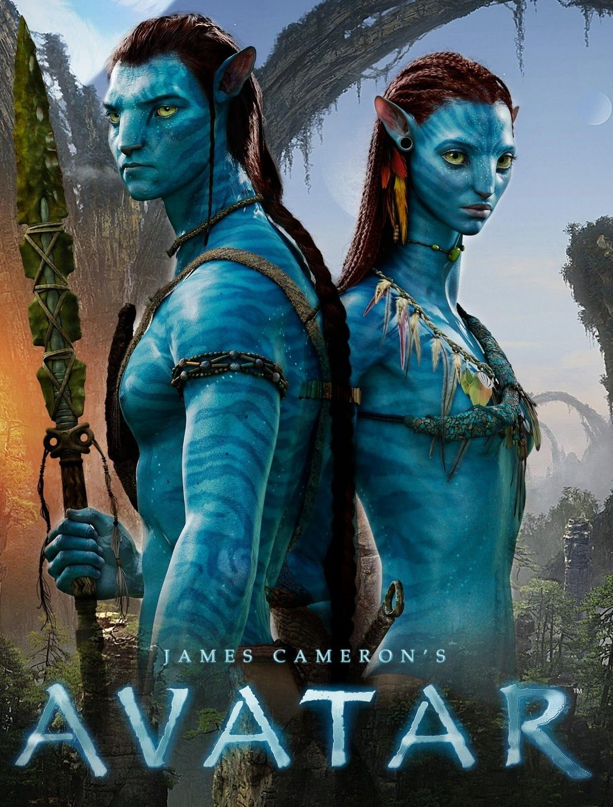

|  |
Description
In the year 2154, a human colony has been established on a distant planet called Pandora. The humans are hunting for a rare mineral that could solve the ecological crisis on Earth. However, their plans are thwarted by an indigenous race called the Na'vi, whose village is resting right on top of the rare ore they need. To solve this problem, Col. Quaritch sends ex-Marine Jake Sully out into the wild piloting an Avatar- a remote control alien body that will allow Jake to breath the air on Pandora- to gain the Na'vi's trust and get them to relocate. As Jake discovers the new world of the Na'vi, he meets a beautiful Na'vi woman named Neytiri, who teaches him the values that her race shares. As Jake starts to see the world through her eyes, he realizes how much this new world matters to the Na'vi and to him and fights to protect his new race.
Movie Info
Genre: Fantasy, Action, Adventure, Sci-Fi
Original Language: English
Director: James Cameron
Producer:James Cameron, Jon Landau
Writer: Mark Heyman, Andres Heinz
Release Date (Theaters): Dec 18, 2009 Wide
Release Date (Streaming):Feb 10, 2016
Box Office (Gross USA):$760.5M
Runtime: 2h 35m
Production Co: Dune, Ingenious Film Partners, Lightstorm Entertainment
Sound Mix:DTS, SDDS, Dolby.